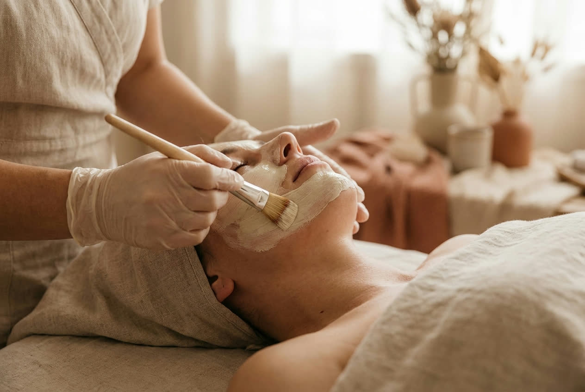

01
Pele Nova
Limpeza profunda, peeling em gradação e reconstrução de barreira. O protocolo de entrada para pele opaca, poros dilatados e textura irregular.
Para quem: quer destravar a pele antes de qualquer outro tratamento. 4 a 6 sessões.